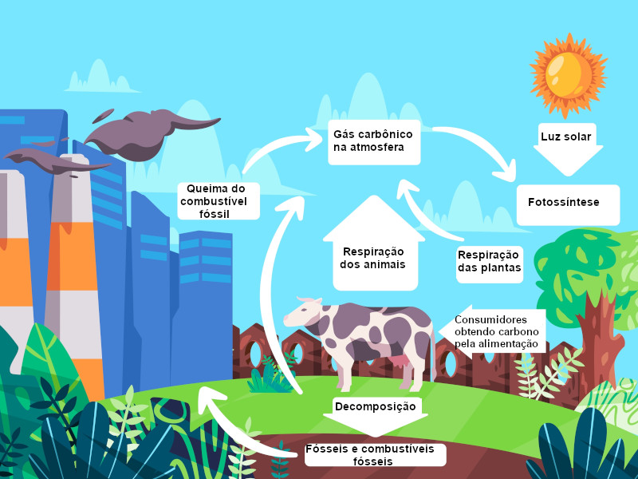
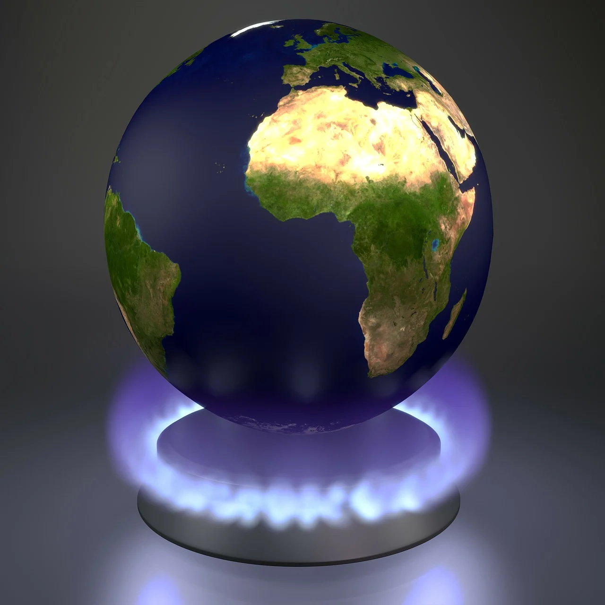
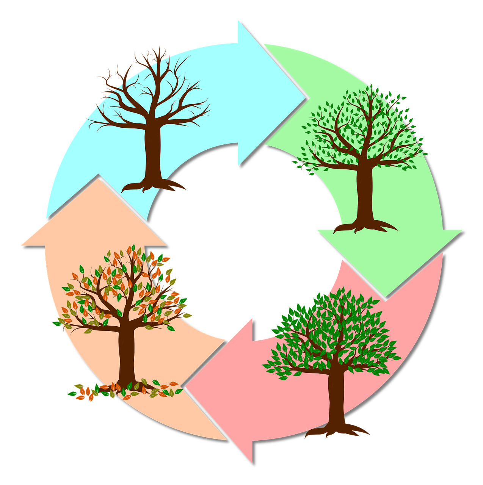

Sobre o Carbono
O que é Carbono?
O carbono é um elemento químico fundamental para a vida na Terra. É o quarto elemento mais abundante no universo e está presente em todas as formas de vida conhecidas.

Propriedades do Carbono
- Número atômico: 6
- Massa atômica: 12,0107 u
- Configuração eletrônica: 1s² 2s² 2p²
- Capacidade de formar até quatro ligações covalentes
Formas Alotrópicas
O carbono pode existir em várias formas alotrópicas, incluindo:
- Diamante
- Grafite
- Fulerenos
- Nanotubos de carbono

Papel no Meio Ambiente
O carbono é um componente essencial do ciclo do carbono, que envolve a troca de carbono entre a atmosfera, os oceanos, a biosfera e os depósitos geológicos. Este ciclo é crucial para a regulação do clima da Terra e para a manutenção da vida. No entanto, a atividade humana, como a queima de combustíveis fósseis e o desmatamento, tem aumentado as concentrações de carbono na atmosfera, contribuindo para o aquecimento global e as mudanças climáticas.
Carbono na Indústria
O carbono é amplamente utilizado em várias indústrias. Na indústria química, ele é um componente essencial na produção de plásticos, borrachas e outros materiais sintéticos. Na siderurgia, o carbono é adicionado ao ferro para criar aço, um material fundamental para a construção e fabricação. Além disso, o carbono é utilizado na produção de produtos farmacêuticos e na tecnologia de semicondutores.
Impacto na Saúde
As emissões de carbono, especialmente na forma de dióxido de carbono (CO₂) e poluentes associados, têm um impacto significativo na saúde humana. A poluição do ar resultante da queima de combustíveis fósseis pode causar problemas respiratórios, doenças cardíacas e aumentar a mortalidade. A qualidade do ar é diretamente afetada pelas emissões de carbono, tornando a redução dessas emissões uma prioridade para a saúde pública.
Calculadora de Créditos de Carbono
Calcule seus créditos de carbono (Brasil)
Calcule os créditos de carbono da sua Empresa
Ciclo do Carbono
O ciclo do carbono é o processo pelo qual o carbono é trocado entre a atmosfera, os oceanos, a biosfera terrestre e os depósitos geológicos.

Processos-chave
- Fotossíntese
- Respiração
- Decomposição
- Dissolução oceânica
- Vulcanismo
- Atividades humanas
Importância do Ciclo do Carbono
O ciclo do carbono é crucial para a regulação do clima da Terra e para a manutenção da vida no planeta. Ele influencia a temperatura global, a acidez dos oceanos e a disponibilidade de nutrientes para os ecossistemas.
Impacto Ambiental
Efeito Estufa
O aumento das concentrações de dióxido de carbono (CO₂) na atmosfera tem intensificado o efeito estufa natural, levando ao aquecimento global.

Acidificação dos Oceanos
O aumento do CO₂ atmosférico leva à absorção de mais carbono pelos oceanos, resultando em uma diminuição do pH da água do mar e afetando a vida marinha.
Mudanças Climáticas
As alterações no ciclo do carbono estão contribuindo para mudanças nos padrões climáticos globais, incluindo eventos climáticos extremos mais frequentes.

Emissões Globais de CO₂ por Setor
Ações Sustentáveis
Redução de Energia
- Use lâmpadas LED
- Desligue aparelhos eletrônicos quando não estiverem em uso
- Invista em eletrodomésticos eficientes
Transporte Sustentável
- Use transporte público
- Pratique carona compartilhada
- Caminhe ou use bicicleta para distâncias curtas
Consumo Consciente
- Reduza o consumo de carne
- Compre produtos locais e sazonais
- Evite produtos descartáveis
Educação e Conscientização
- Participe de workshops sobre sustentabilidade
- Compartilhe informações sobre práticas sustentáveis com amigos e familiares
- Incentive a sua comunidade a adotar práticas ecológicas
Uso de Recursos Naturais
- Reduza o uso de água: tome banhos mais curtos e conserte vazamentos
- Utilize produtos de limpeza ecológicos
- Plante árvores e cuide do meio ambiente local
Reciclagem
- Separe o lixo reciclável do orgânico
- Participe de programas de reciclagem na sua comunidade
- Reutilize embalagens sempre que possível